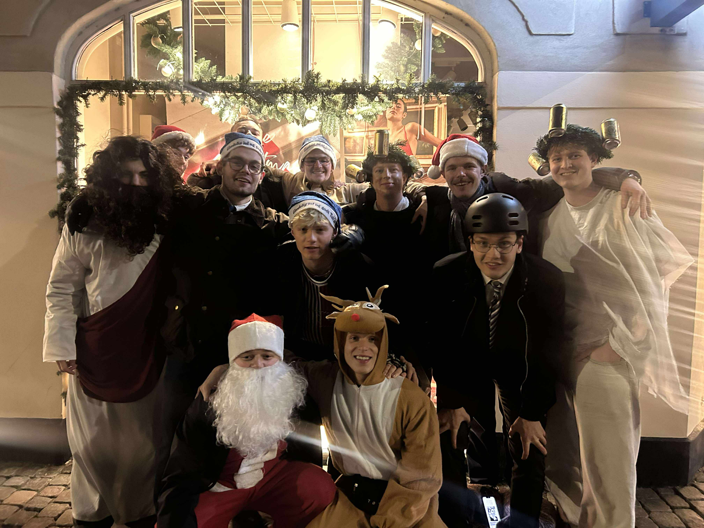

PG Prag 2026 · Final result
PG PRAG CHAMPIONS
The Drunken Archers
Kaptajn: August “Lithium”
The Drunken Archers vandt PG Prag 2026 og kan officielt kalde sig årets mestre.
Final standings
Slutstillingen
The Drunken Archers
Kaptajn: August “Lithium”
Dirty TwoKnights
Kaptajn: Alfred Spikes
The Lords of Beerkstein
Kaptajn: Pony Toby
The teams
Holdene
🥈 2. plads
Dirty TwoKnights
Kaptajn: Alfred Spikes
- 👑 Alfred Spikes
- 👤 Dirty Hashlund
- 👤 Victatoren
🏆 PG Champions
The Drunken Archers
Kaptajn: Lithium
- 👑 Lithium
- 👤 Joey
- 👤 Kåre Nivå fra Duvå
🥉 3. plads
The Lords of Beerkstein
Kaptajn: Pony Toby
- 👑 Pony Toby
- 👤 Dobbelt Felix
- 👤 14
Treasure hunt · Final results
Skattejagten
60 challenges. 3 hold. Én vinder.
🥇 1. plads
The Drunken Archers
Kaptajn: August “Lithium”
40
/ 60
Challenges completed
66,7 % gennemført
🥈 2. plads
Dirty TwoKnights
Kaptajn: Alfred Spikes
36
/ 60
Challenges completed
60 % gennemført
🥉 3. plads
The Lords of Beerkstein
Kaptajn: Pony Toby
28
/ 60
Challenges completed
46,7 % gennemført
The weekend
Sådan forløb turen
Dag 1
Fredag
Københavns Lufthavn
Turen begyndte med den obligatoriske lufthavnsøl.
Ankomst til suiten
Check-in, holdfordeling og de første forberedelser.
Kostumer og skattejagt
Holdene udforskede Prag og kæmpede om de første point.
Medieval Dinner
U Pavouka Medieval Tavern
2,5 timers show, fem retter og all you can drink.
Se stedetDag 2
Lørdag
Morgenmad og klargøring
Holdene gjorde sig klar til den officielle PG-rute.
PG Start
Holdvideoer, skattejagtsresultater og starten på første hul.
Pub Golf gennem Prag
Ni stop, forskellige P Games og en rute gennem centrum.
Afterparty og vindere
Ruten sluttede i suiten, hvor The Drunken Archers blev kåret som PG Prag 2026-vindere.
The official course
PG-ruten gennem Prag
Prague Course Map
9 stop gennem Prag
Fra suiten, gennem Prags barer og tilbage til afterparty.
The challenges
P Games
Et tilbageblik på spillene og udfordringerne fra PG-ruten.
Stop 6
PG Pub Quiz
De 10 spørgsmål fra pubquizzen om Prag. Facit kan stadig åbnes med dommerkoden.
Dommerfacit
Åbn svarene og se, hvor mange I stadig kan huske.
Hall of Fame
PG Deltagere
11 legender. 3 hold. 1 mission.
Tryk på et kort for at vende det
Weekend archive
Bedste øjeblikke
Et udvalg af minder fra PG Prag 2026.



Until next time
Tak for PG Prag 2026
En weekend med konkurrencer, kostumer, pub golf, middelaldermiddag og questionable decisions.